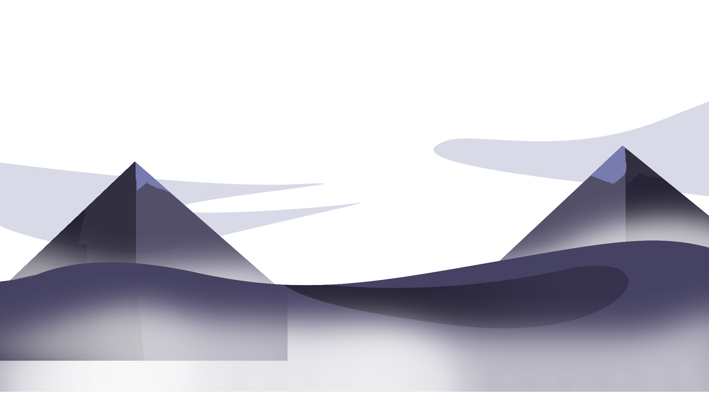
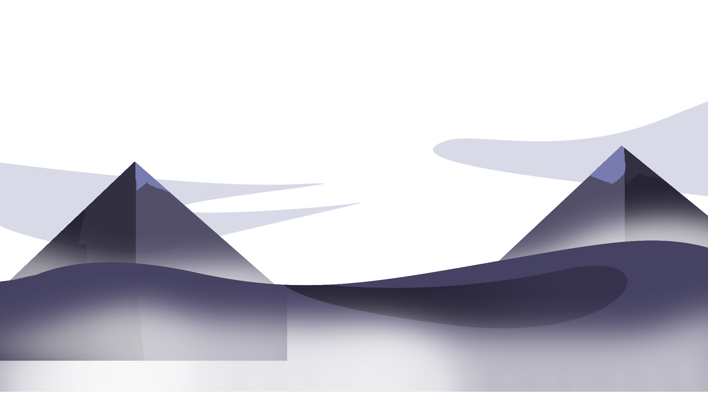
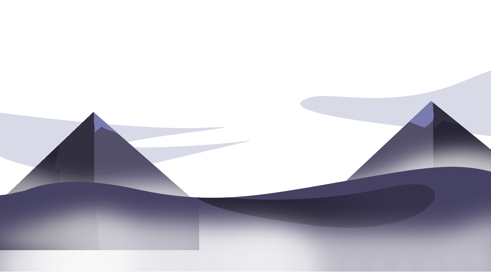
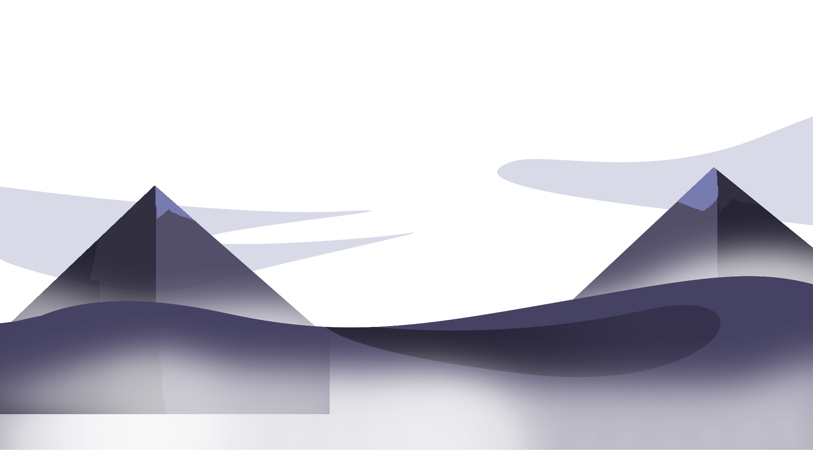
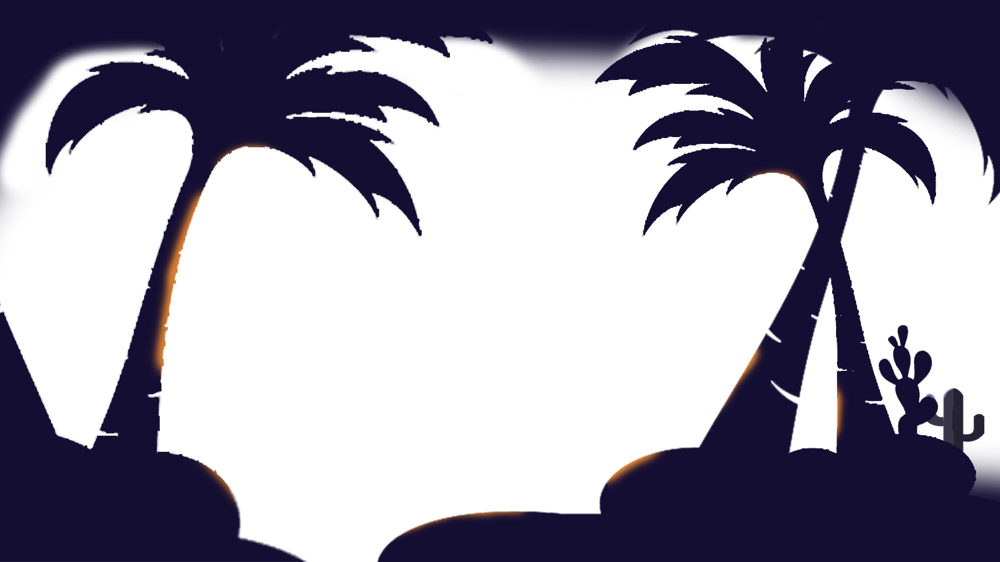
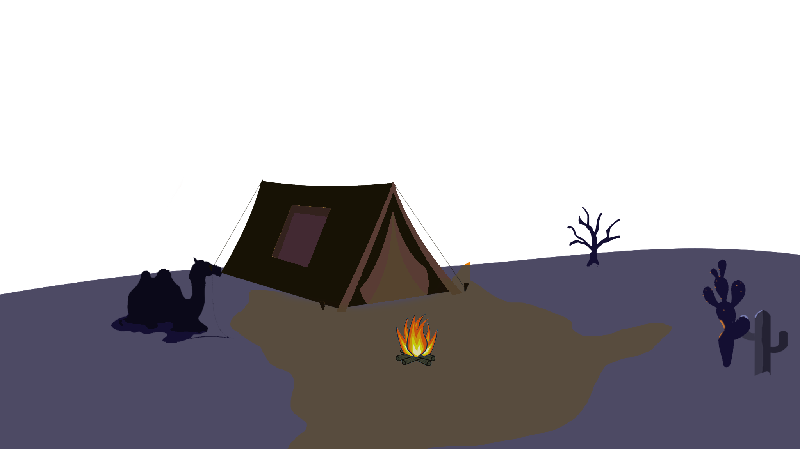
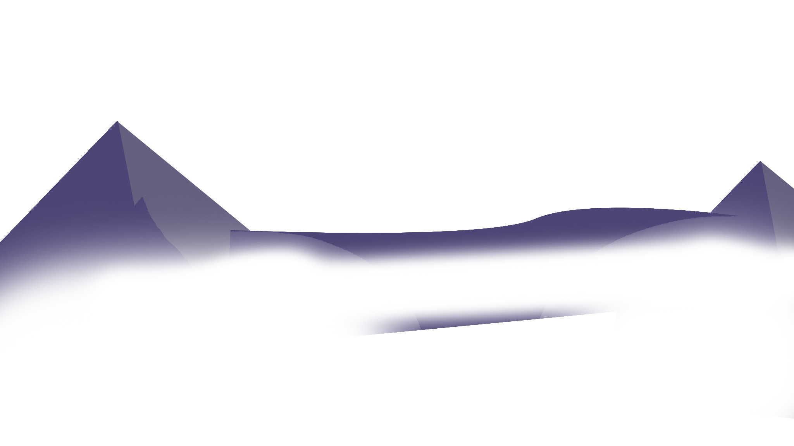
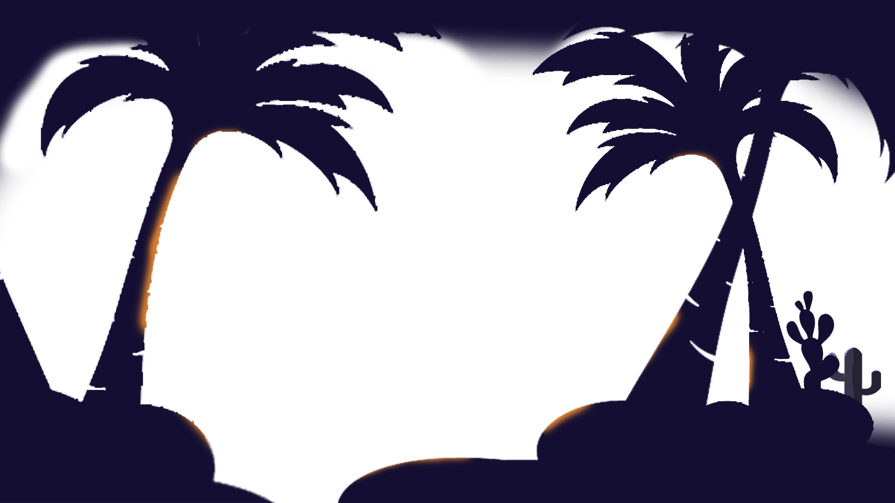
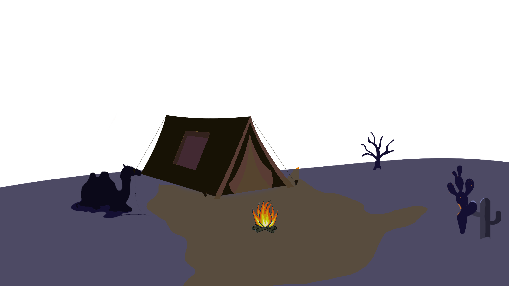
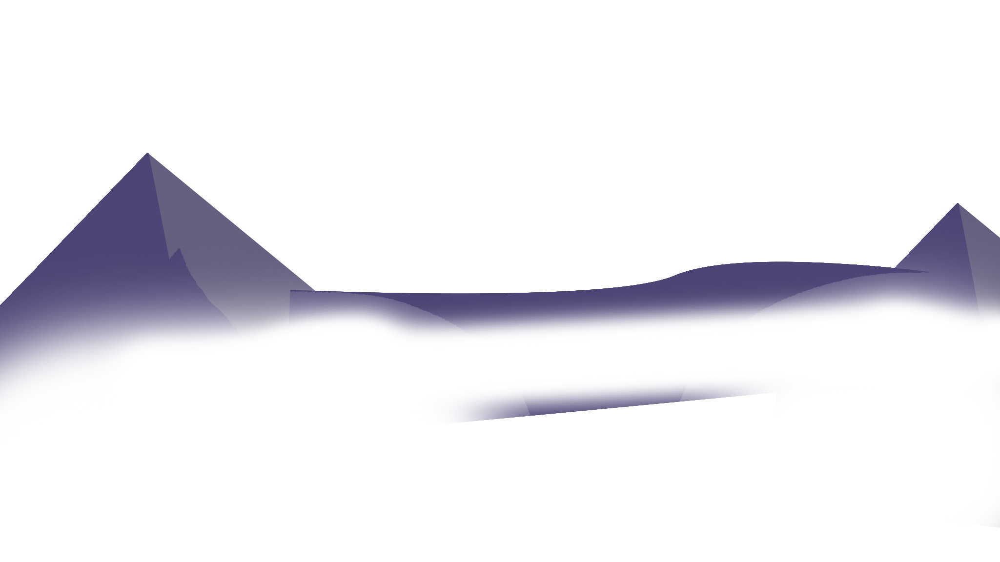

The intention of created this website is just to fill my free time, This website created based on my experience that i got from youtube tutorial and other source. For that, im appreaciate it
if someone give me suggestion about the perfection this website
This is my personal webpage, im newbie in website development but im try my best, i do like to help people and i hope this website can education you><
 





Im just an ordinary student that keen with design, im study at vocational highschool major multimedia, im not really an creative person but when i thought something cool i will realize it
This
is my personal webpage, im newbie in website development but im try my best, i do like to help people and i hope this website can education you><